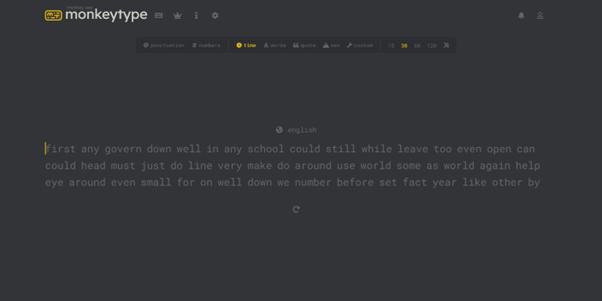
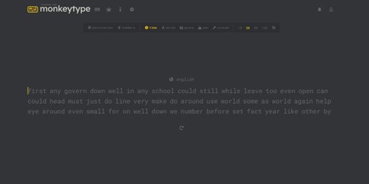

YFF - Hva jeg har jobbet med
00. Første prosjekt - Discord bot
Det første prosjektet jeg startet på, var å lage en discord bot. Dette var noe jeg hadde tenkt på å lage lenge, og ved hjelp av litt research fant jeg ut at det faktisk ikke var så vanskelig å lage som jeg hadde trodd. Derfor bestemte jeg meg for å prøve å lage en discord bot.
Jeg søkte opp hvordan man koder en discord bot på Youtube. Her valgte jeg en video-tutorial, og fulgte den ut i prosjektet. I alle tutorial-ene jeg fant, oppfordret de til å kode med Replit, et nettsted der man kan kode i Python direkte i nettleseren, uten å måtte laste ned noe som helst. Problemet jeg møtte her var at en del av koden ikke fungerte som den skulle. I alle Youtube- og nettsteds-tutorial-ene jeg fant, fungerte det helt fin, men om jeg prøvde med nøyaktig den samme koden, fungerte det ikke. Jeg prøvde å søke opp problemet på Google og fant noe kode som skulle løse problemet. Når jeg kjørte programmet med den nye koden, fikk jeg masse andre error-meldinger, som jeg ikke skjønte så mye av.
På dette punktet fant jeg ut at jeg ville prøve å kode i Visual Studio Code for å se om det kunne hjelpe på problemene. Men her måtte jeg klare å installere «discord.py» modulen. Dette ble til en veldig tidskrevende og forvirrende prosess, Jeg måtte både installere og avinstallere mange forskjellige moduler og miniprogrammer. Løsningen på det hele var å avinstallere for å så installere Python på nytt igjen.
Når jeg hadde kommet hit i prosessen, og kjørte programmet lokalt fra VS Code, fikk jeg de samme errormeldingene som jeg fikk i Replit. Jeg gjorde et nytt forsøk på å feilsøke det samme problemet igjen, men jeg fant ikke ut så mye nyttig. Etter lang tid med bare feilsøking med dårlig resultat, og cirka 0% fremgang i prosjektet, bestemte jeg meg for å sette prosjektet på pause, og heller jobbe med noe annet en stund. Kanskje jeg kommer tilbake til å jobbe med dette senere i år.


01. Nytt prosjekt - TypeTest nettside
Jeg er ofte inne på «TypeTest» nettsider for å forbedre skrivehastigheten min på tastatur. Derfor tenkte jeg at det hadde vært gøy å lage min egen typetest-nettside. Dette prosjektet innebærer mye HTML og CSS, noe jeg jobbet mye med i første klasse. Noe jeg må lære meg mer av, er JavaScript, som er kjemperelevant for prosjektet.
Til nå har jeg laget et enkelt, midlertidig design i Adobe XD. Det mest krevende med dette prosjektet er definitivt JavaScript-delen. Derfor valgte jeg å ikke bruke så lang tid på design-delen. Jeg har også begynt på selve nettsiden, og laget den lik som design-prototypen i Adobe XD.
Utfordringene med dette prosjektet foreløpig har vært relatert til CSS. Å style HTML-elementer riktig, i tillegg til å plassere dem riktig, er noe jeg syns er litt vanskelig. Derfor skal jeg prøve å lære meg CSS bedre.


02. Veien videre
Det jeg skal gjøre videre nå, er å lage ferdig nettsiden. Dette innebærer å lære seg mer CSS, slik at jeg har en bedre forståelse av hvordan CSS fungerer, slik at jeg kan bruke mindre tid på små-feil som jeg gjør nå.
I tillegg skal jeg lære meg JavaScript, fordi dette skal jeg bruke for å lage koden for selve TypeTest-en. Dette tror jeg kan bli utfordrende, både med tanke på at koden og den logiske tenkningen kommer til å være ganske innviklet, og at alt kodes med JavaScript, et språk jeg ikke er så kjent med, og at store deler av koden skal linkes til HTML-elementer. Etter at jeg har gjort dette tenker jeg å se på muligheter for å redesigne nettsiden.


 
